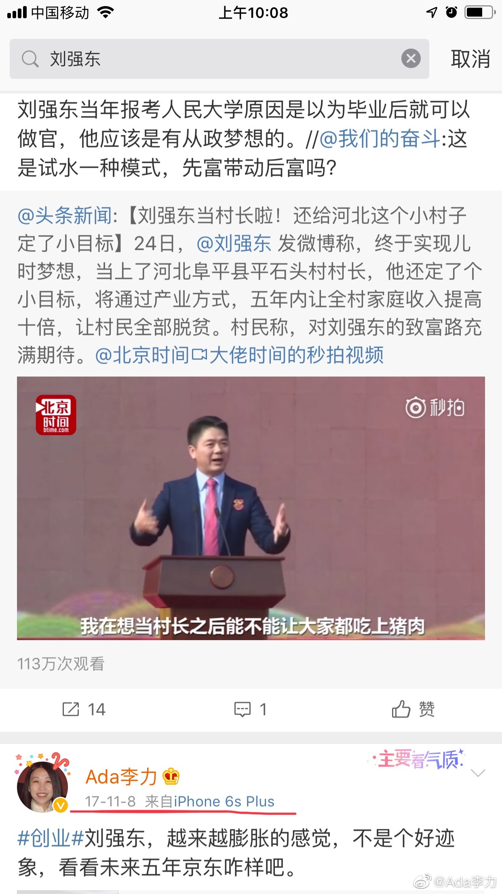

我关注的人群中，女性几乎是一边倒地支持美国提出强奸诉讼的Jingyao Liu女士。我想了想，好像自己一直对刘强东也没太多好感，虽然也看过不少京东的创业资料，还尝试从刘强东身上学习创业者特点。搜了下自己之前的微博，知道些原因了。
今日资本的徐新一直非常看好也立捧刘强东。我有些好奇在这个事件上，她会进入哪个角色？投资人的角色，还是女性角色？
不知为什么，我还是希望徐新站好投资人角色。优秀的女性投资人还是太少了。 女性地位的改变，需要更多女性去占据顶级岗位，能够在钱和权层面真正起到抗衡的作用。没有实力的抗议，经常也仅仅是抗议罢了。
男女平等是真理吗？不是，它是一种文明，但，文明要靠什么来推进和保障？好好想想这个逻辑吧。
---
今日资本的徐新一直非常看好也立捧刘强东。我有些好奇在这个事件上，她会进入哪个角色？投资人的角色，还是女性角色？
不知为什么，我还是希望徐新站好投资人角色。优秀的女性投资人还是太少了。 女性地位的改变，需要更多女性去占据顶级岗位，能够在钱和权层面真正起到抗衡的作用。没有实力的抗议，经常也仅仅是抗议罢了。
男女平等是真理吗？不是，它是一种文明，但，文明要靠什么来推进和保障？好好想想这个逻辑吧。
---
- 